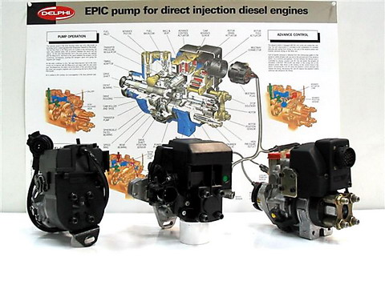
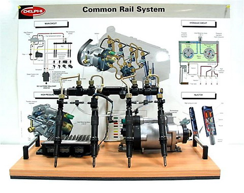
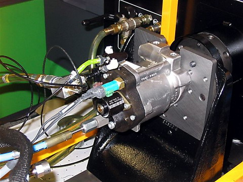
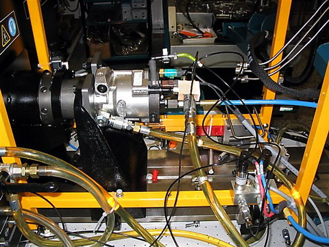

Delphi-Lucas forgóelosztó rendszerű, mechanikus szabályozású adagolók. Balról jobbra haladva egy DPA típusú, majd mellette 2 DPC rendszerű adagoló látható
Delphi forgóelosztó rendszerű, elektronikus szabályozású EPIC adagolók. Balról kezdve: egy PSA 2.1 SVDT motorra szerelt, közvetett befecskendezésű EPIC - IDI adagoló, majd egy Mercedes C-220, E-220 típusba szerelt, szintén EPIC - IDI adagoló következik, végül pedig egy Ford Transit 2.5TD járműbe szerelt, közvetlen befecskendezésű EPIC - DI adagoló.
A képen a Lucas által kifejlesztett, majd a Delphi által sorozatgyártásra került magasnyomású rendszere látható. A szivattyú jellemzője, hogy a magasnyomást radiál dugattyúkkal, bütykösgyűrűvel vezérelve hozza létre. Sajátossága, hogy az álló adagolóelem radiáldugattyúi körül forog a meghajtótengellyel együtt a bütykösgyűrű. A rendszer nyomását, bemeneti-mennyiségszabályozó szeleppel végzi. A Cr porlasztója mágnestekercs vezérlésű. A befecskendezés vezérlését itt is, mint a Bosch-nál, differenciált nyomásvezérléssel oldották meg. Közös magasnyomású gyűjtőcső helyett egyes típusoknál alkalmaznak még "gömb" alakú kivitelt is.
 A képeken a Delphi magasnyomású szivattyú Hartridge próbapadi felszerelése, vizsgálata látható. A vizsgálathoz gyári, speciális kiegészítőegységek szükségesek. A bevizsgálás a Delphi által kifejlesztett szoftver segítségével történik. Ez legegyszerűbben az EPIC adagolók vizsgálatához kialakított ETK berendezés felhasználásával oldható meg. Az ETK PC-jén futó program hardveresen kapcsolatban van a próbapad vezérlőegységeivel, érzékelőivel. A vizsgálat egyik leglényegesebb része a bemeneti (IMV) mennyiségszabályozó szelep vizsgálata. Ha ez nem működik megfelelően, a gépjármű vészüzemmódban fog csak működni.